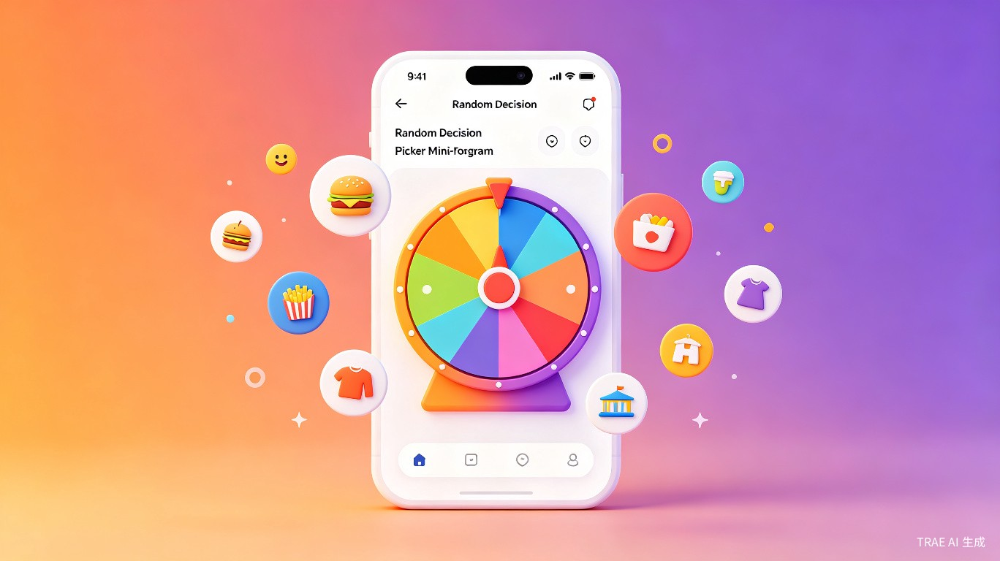
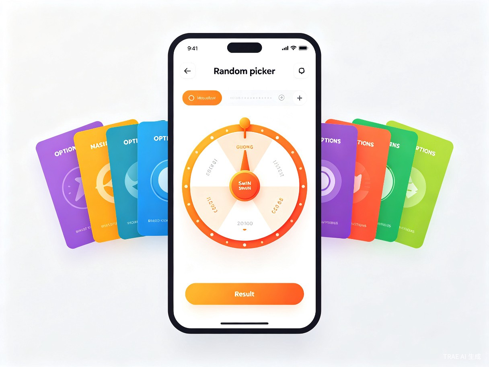
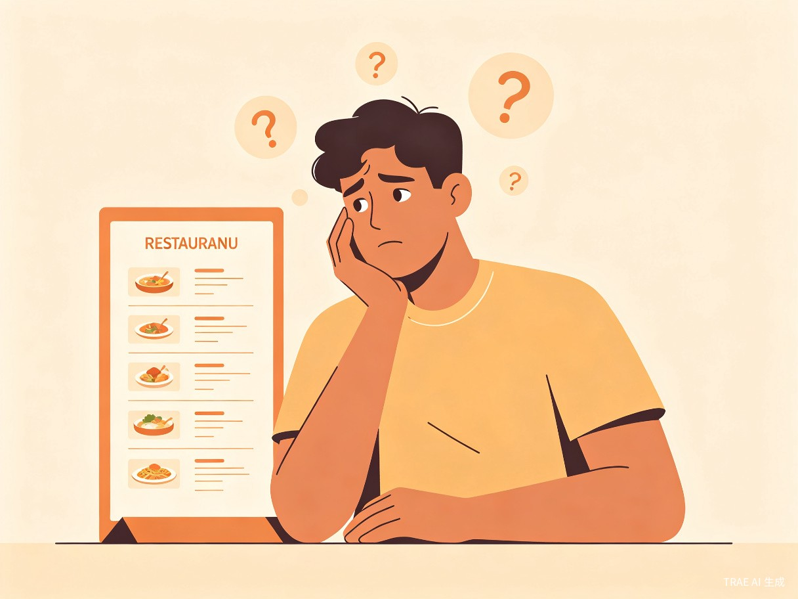

专治选择困难症，让每一个犹豫不决的瞬间，变成一次有趣的冒险
日常生活中，人们经常面临各种选择困境——今天吃什么、看什么电影、穿什么衣服、周末去哪里玩。这些看似微小的决策，却常常消耗大量时间和精力，甚至引发焦虑和纠结。选择困难症已成为现代都市人群的普遍痛点。
灵感来源于我们团队自身的经历。每次午休时同事之间"吃什么"的讨论总是持续二十分钟以上，最后大家还是随意选了一家。我们发现，很多时候人们不是没有选项，而是缺少一个"推一把"的力量。一个有趣、随机、又带点仪式感的决策工具，恰好能填补这个空白。转盘旋转的视觉效果自带娱乐性，让决策过程本身变成一种享受。
微信小程序 — 无需下载安装，即开即用，完美适配社交分享场景。用户可以通过微信快速打开，创建选项并一键生成转盘，还能将结果分享给好友或群聊，形成社交传播。

核心用户群体为 18-35 岁的年轻人群，包括大学生、职场白领、年轻情侣等。这类人群生活节奏快、社交活跃，日常面临大量琐碎决策，同时乐于尝试新工具、分享有趣内容。
中午不知道吃什么？输入周边餐厅列表，转盘帮你选
今晚看什么电影、玩什么游戏？让转盘来决定
几件衣服选哪件？多个商品犹豫不决？转盘帮你快速决策
假期去哪里？输入候选目的地，让灵感转盘给你惊喜

流畅的旋转动画效果，支持自定义颜色和音效，增强决策仪式感
内置美食、电影、旅行等常用场景模板，一键加载，无需手动输入
自动保存每次决策结果，回顾你的"命运选择"，发现决策偏好
一键生成精美结果卡片，分享到微信群或朋友圈，邀请好友参与
支持为选项设置不同权重，让某些选项更容易被选中
多种精美主题皮肤免费切换，满足个性化审美需求
小程序天然适合社交裂变传播，通过模板预设和分享功能实现低成本获客。可拓展本地生活服务接入（如餐厅推荐、电影购票），通过CPS 分佣和品牌合作实现商业变现。用户高频使用场景（每日三餐决策）保证了极高的用户粘性和日活率。
基于 微信小程序原生框架 开发，使用 Canvas 绘制转盘动画，WXS 实现高性能动画渲染，确保 60fps 流畅体验。UI 采用自定义组件化架构，支持主题换肤和响应式布局。
采用 微信云开发（CloudBase）作为后端方案，免服务器运维，自动弹性扩缩容。云数据库存储用户数据和模板信息，云函数处理业务逻辑，云存储管理用户上传的图片资源。
用户数据加密存储，严格遵循微信小程序隐私规范。不收集非必要个人信息，决策数据仅用于个性化推荐和历史记录功能，用户可随时清除。
核心转盘功能 + 基础模板 + 社交分享，快速上线验证市场需求
AI 智能推荐 + 社区模板市场 + 品牌合作接入，扩大用户规模
开放 API 能力 + 跨平台扩展 + 本地生活服务闭环，构建决策生态